Single Session
60-minute sessionBest for returning clients or if you're looking for support around one specific topic.
€150
Book a call
When your body doesn't feel safe, your nervous system steps up to protect you because its number one priority is to keep you alive. That's why trying to think your way out of survival mode rarely works. And I say this with so much compassion because I've been there too—understanding what was happening, yet still feeling stuck.
Real change becomes possible when your body begins to experience safety again.
Nervous system-informed coaching helps you understand and work with your nervous system rather than against it. Together, we create the conditions where lasting change becomes possible—not through pressure, but through safety.
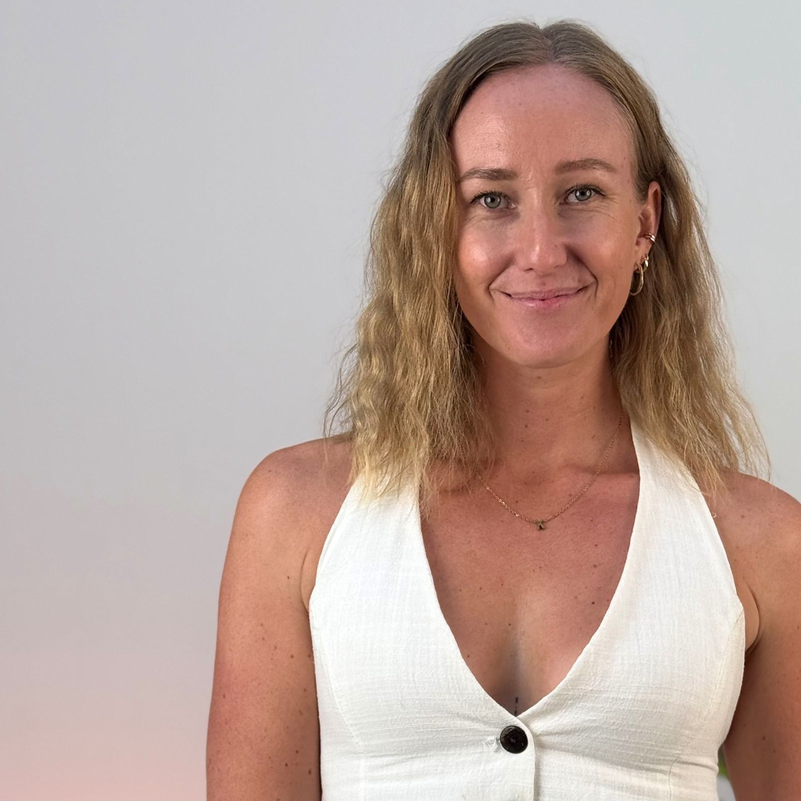
Imagine a life where you respond from a choice instead of old patterns. A life where you can be your fullest self. That's what's possible when your nervous system begins to experience safety.
—KatiIf you're reading this and thinking, "That's me," I want you to know something. There is nothing wrong with you. Your nervous system has just done what it knows best to keep you safe. 🤍
The beautiful thing is this: your nervous system is adaptive. If it learned to protect you, it can also learn to soften.
You say "I'm fine" long after you stopped feeling fine.
Rest feels like something you have to earn.
Boundaries feel like a risk instead of a love language.
Doing it all yourself feels easier than asking for help.
Saying yes when you really want to say no.
Feeling like you lose yourself in relationships.
Feeling anxious even when nothing is wrong.
I'm an ICF-trained Certified Coaching Professional, and I offer polyvagal-informed, trauma-aware coaching for women who want to experience more calm in their lives, break free from old patterns, and feel safe enough to be their authentic selves.
Originally from Finland, I've lived abroad and travelled since I was 19. For most of my life, I felt like I was drifting through life—feeling lost, repeating the same relationship patterns, and wondering why I couldn't feel truly fulfilled, even though life looked good from the outside.
Somewhere along the way, I learned to hide parts of who I was in order to feel accepted. I became like a chameleon—constantly adapting to be the version I thought others wanted to see. The "nice" girl. Always smiling. Always putting others' needs before my own. I don't think I even knew who the real me was anymore.
I was determined to understand myself better. I listened to thousands of podcasts, read countless books, and understood my patterns intellectually, yet I still felt stuck.
Everything changed when I discovered nervous system work.
One day, a relationship made me realise just how activated my nervous system was and how deeply fear was shaping the way I moved through life.
For the first time, all the pieces finally clicked into place. I stopped trying to think my way into healing and started consistently regulating my nervous system. As I learned to do that, I found more confidence, more trust in life itself, and eventually felt ready to finally step into the work I'd always felt called to do.
If I can be a small part of someone's journey back to themselves, then I've done my tiny part to make this world a little better.
Book a Free Connection Call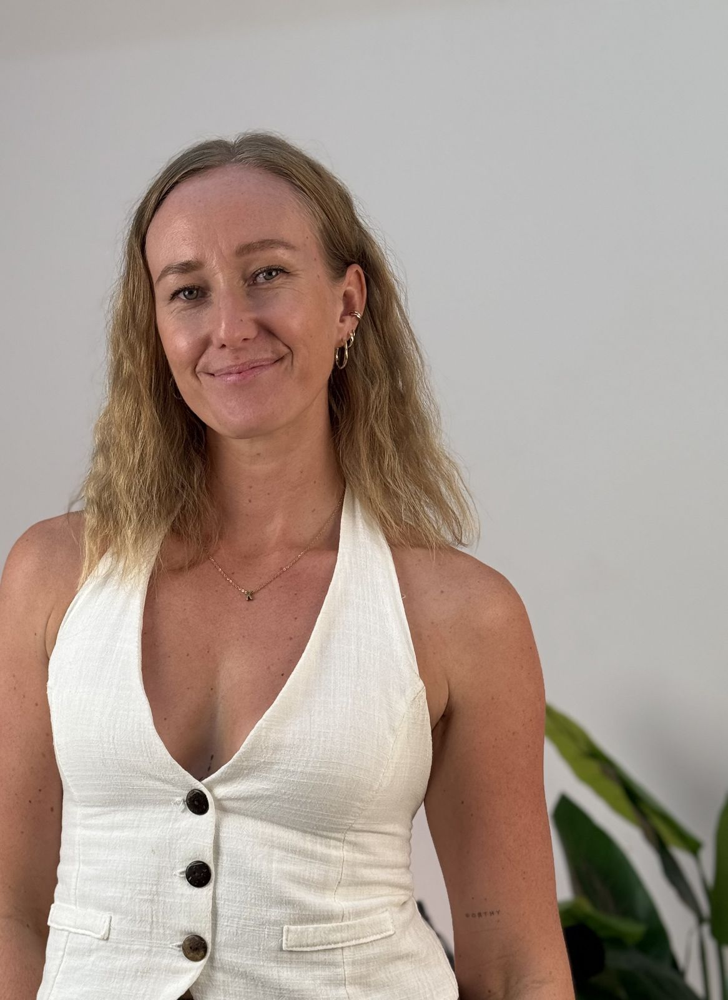
My approach combines ICF-trained coaching with a polyvagal-informed understanding of the nervous system.
Together, we create a space where your nervous system can feel safe enough to soften, and you can explore your inner world. Rather than trying to fix or force change, we let awareness build gradually, at whatever pace feels right for you.
My role isn't to give you the answers, but to help you hear your own. As your nervous system begins to experience more safety, your capacity to hold more of yourself grows, too.
Are you ready to meet all of you?
We begin with curiosity, not judgment. Together, we'll explore whatever you want to bring into the conversation through the lens of your nervous system—gently getting to know your protective patterns, emotions, and beliefs.
We don't rush or force the process. You set the pace. With a safe other by your side, your nervous system can begin to soften, you can let your guard down, and gently meet more of yourself.
Together, we'll explore practical ways that work for you to support your nervous system while moving toward the life you want to create. Over time, you can begin leading your life from choice instead of survival.
Every coaching journey begins with a free connection call—no pressure, no expectations, just a conversation.
While you're welcome to book a single session, I generally recommend starting with at least three. Real, meaningful change takes time. Having the space to gently explore what's beneath the surface, get to know your nervous system, and integrate what you're learning allows the work to go much deeper than one conversation ever could.
Best for returning clients or if you're looking for support around one specific topic.
Recommended for new clients. Over three sessions, we'll gently get to know your nervous system, start noticing your patterns as they happen, and find supportive tools that feel right for you, so the changes you make can last beyond our time together.
Designed for those who want ongoing support. With more time together, we can deepen the work, strengthen your sense of safety, and create lasting change at a pace that feels right for you.
Safety Within wasn't just a name I came up with—it was something I spent years searching for without even realizing it.
For a long time, I believed a new country, a relationship, a home, or the next adventure would finally make me feel better inside. But I came to realise they were only temporary distractions. As soon as the excitement faded, the old sense of anxiousness and longing quietly returned.
That's when I understood something that changed my life: the felt sense of safety I had been longing for was an inside job. It couldn't be outsourced.
Lasting change can't happen when you're constantly chasing something or running from something. It begins when your nervous system experiences enough safety to soften and simply be here, in the present moment.
That's what Safety Within represents.
Not attaching your worth to achievements.
Not hiding parts of yourself to be accepted.
Not letting your relationship status define your value.
Not outsourcing your sense of safety—but building it from within.
"A homecoming—a place to slow down, let your guard down, and reconnect with all parts of yourself."
—Kati Book a Free Connection Call"I had four sessions with Kati from Safety Within Coaching and it has been truly transformative for me. I now recognise when my nervous system is becoming activated and thanks to Kati I have the tools to respond before I shut down. One of the biggest shifts has been learning to treat myself with compassion instead of criticism. I now understand that rest isn't laziness, it's regulation. Kati is incredibly knowledgeable, compassionate and creates such a safe space. I can't recommend her highly enough."
"I can 100% recommend Kati as a coach. Not only did she explain how my nervous system works, but she also guided me through the process of understanding when and why it reacts the way it does. On top of that, the coaching helped me recognize deeply rooted generational trauma and understand how it has affected my relationships, as well as my patterns around self-worth, money, and success."
"Overall, the coaching had a hugely positive impact on me, and I am deeply grateful to have gone through this process with Kati. It was definitely her presence and coaching style that allowed me to be vulnerable and dig deep enough to uncover all these insights."
"Kati is hugely supportive as a coach. She's attentive, encouraging, and always pushing me toward growth in the most supportive way that's without judgment. Her compassion and empathy whilst gently nudging me out of comfort zone, really helped me to gain clarity on what truly mattered - I can't thank her enough!"
"As someone experiencing anxiety and burnout and doing various therapies before, this has come into my life at exactly the right time. I have learned practical tools that I use every day, learned how to be more compassionate about myself and what I can actively do to make my nervous system feel safer. These insights have changed the way I see both myself and the people around me."
There is enormous beauty in becoming. Perhaps becoming isn't about discovering a new version of ourselves, but about finally welcoming home the parts of ourselves that have been waiting to be seen for so long.
—Kati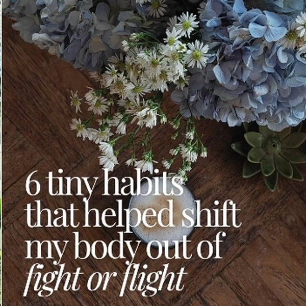
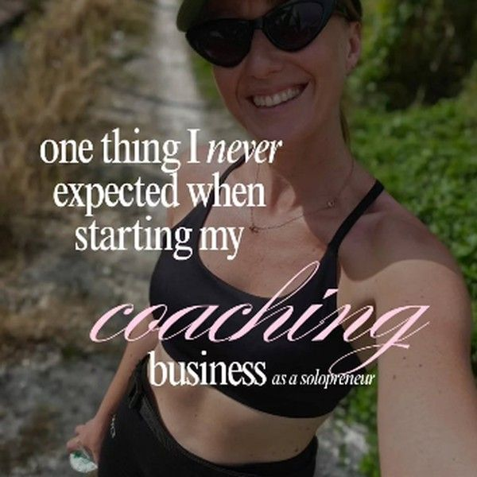
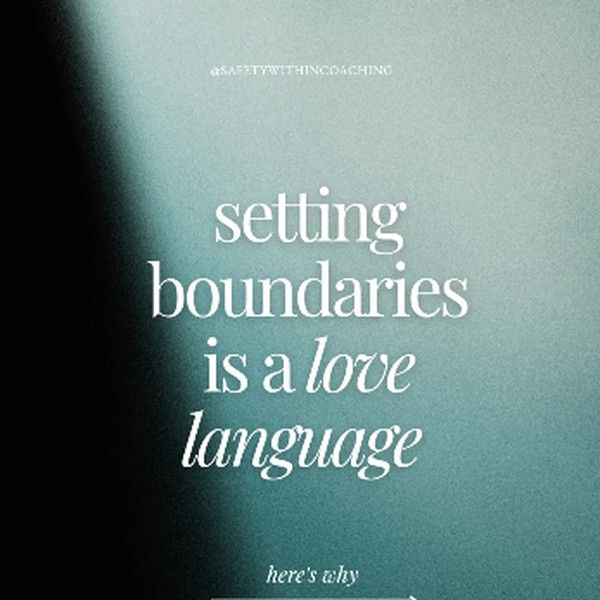
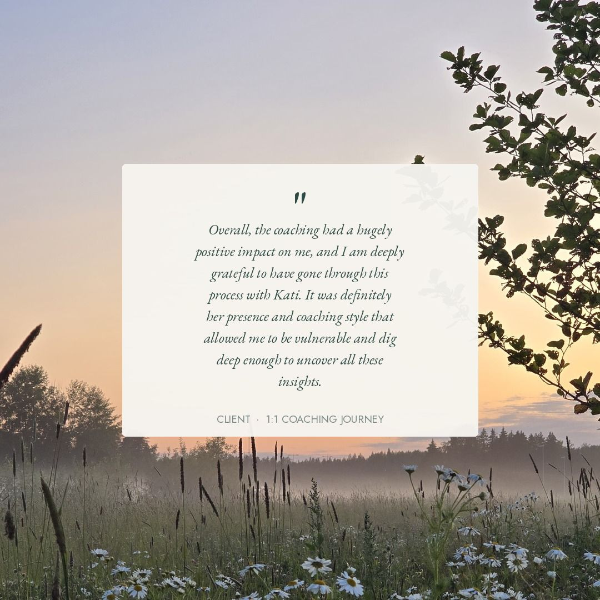
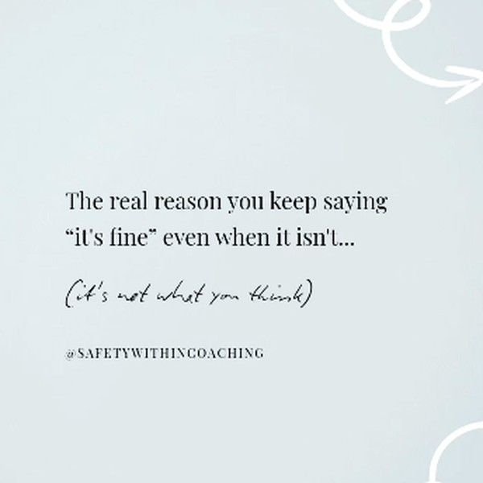
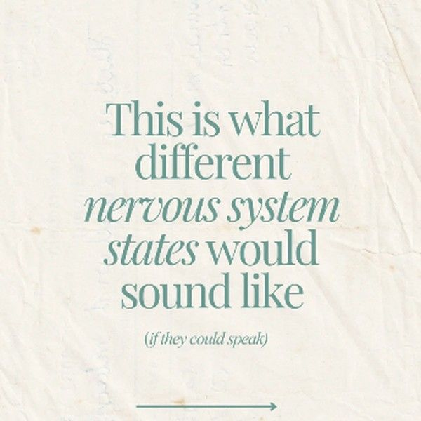
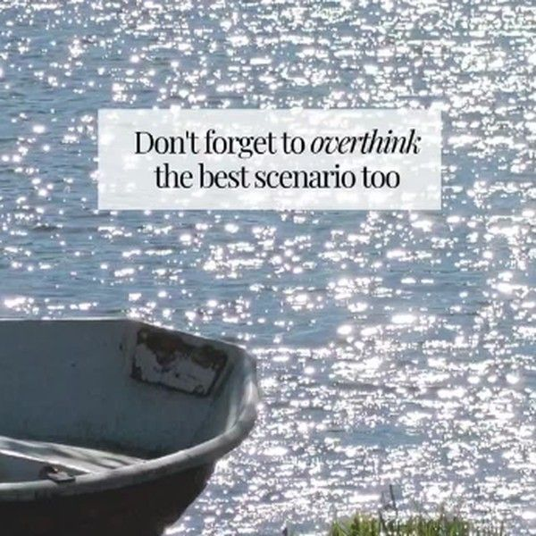
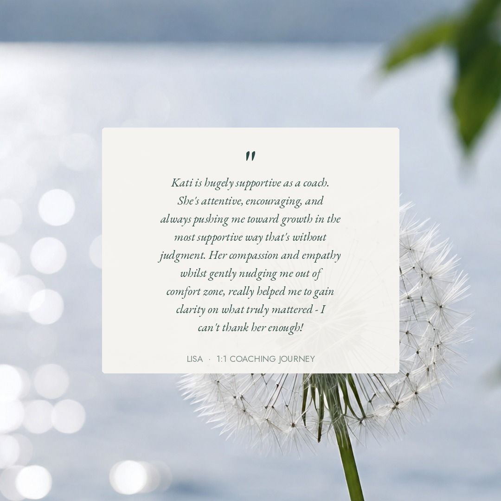
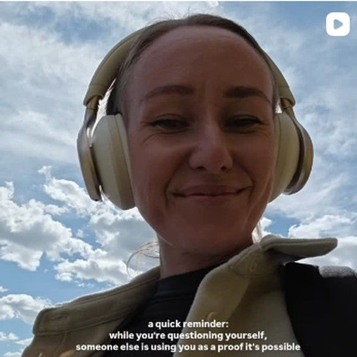
A free 30-minute connection call. A space to share what's bringing you here, ask questions, and see whether this feels like the right next step for you.
Nothing needs to be decided in a hurry here.
Book a Free Connection Call